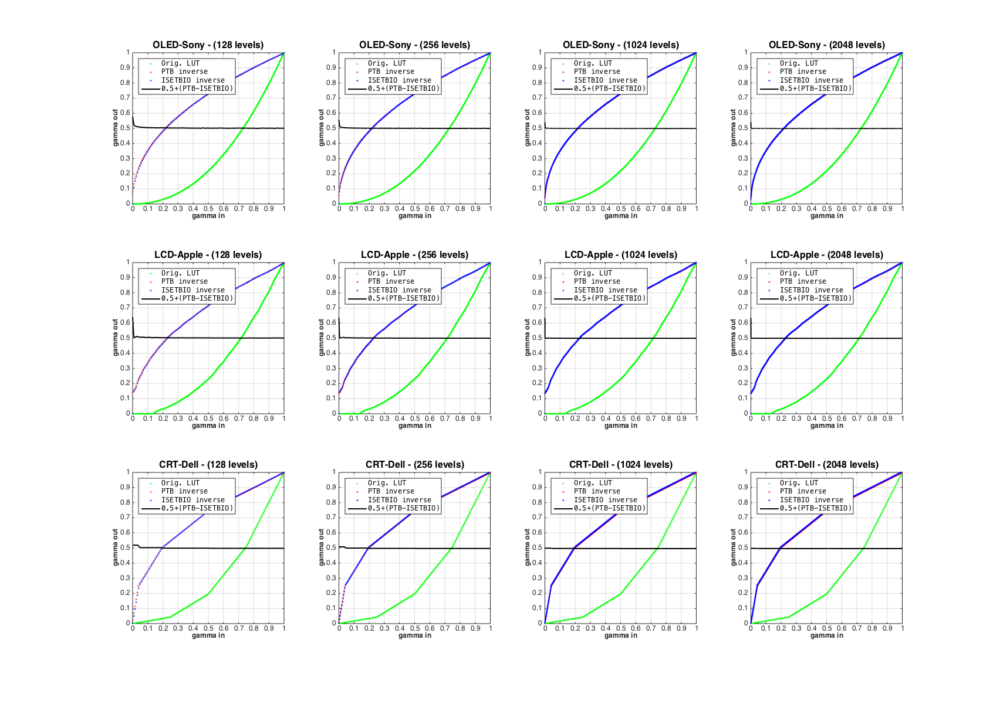

Contents
function varargout = v_DisplayLUTinversion(varargin) % % Validate display calibration lut inversion against PTB. % % The two don't give exactly the same results, as the inversion methods % are not identical. In particular, the PTB routines, the way we are calling % them here, fit the gamma function with a power function, which smooths things % out. (The PTB functions have many other options for how they fit gamma functions, % but we are not exploring those here.) The isetbio functions do not do the smoothing. % % In the graphs, the comparison is ballpark good and we are happy enough with that. % We've saved out what the two do, after comparing the graphs here. % % See also v_IrradianceIsomerizations, v_DisplayColorConversion varargout = UnitTest.runValidationRun(@ValidationFunction, nargout, varargin); end
Function implementing the isetbio validation code
function ValidationFunction(runTimeParams)
Initialize ISET
close all; ieInit;
Some informative text
UnitTest.validationRecord('SIMPLE_MESSAGE', 'Compare isetbio and PTB display lut inversion.');
Remove the Brainard lab PTB overrides folder from the path
Uncommentnig this code from using the new BL object oriented PTB overrides. We could include these inside of isetbio, but the risk is that whether this program worked or not would depend on whether isetbio was before or after PTB on the user's path, something we don't want to have to deal with. Elsewhere (not in isetbio), we have established that the PTB and BrainardLab routines do the same thing (which is not surprising, as the actual calculations are done by the same underlying code in each case, just accessed differently.)
But, we don't think we need this. [removedFolderFromCurrentPath, originalPath] = removeBrainardLabPTBOverrides();
try
Compare PTB vs ISETBIO LUT inversion for three different displays
and four different gamma table lengths
displaysToTest = {'OLED-Sony', 'LCD-Apple', 'CRT-Dell'};
gammaTableLengthsToTest = [128 256 1024 2048];
% Loop over displays
for displayIndex = 1:numel(displaysToTest)
% Create a display object
d = displayCreate(displaysToTest{displayIndex});
% Retrieve key properties of the display
%
% Gamma table, remove 4-th primary, if it exists,
% for testing purposes.
gammaTable = displayGet(d, 'gamma table');
if (size(gammaTable,2) > 3)
gammaTable = gammaTable(:,1:3);
end
originalGammaTableLength = size(gammaTable,1);
originalSettingsValues = linspace(0,1,originalGammaTableLength);
% Primary SPDs
% Remove 4-th primary, if it exists, for testing purposes.
wave = displayGet(d, 'wave');
spd = displayGet(d, 'spd primaries');
% Screen size and DPI
dotsPerMeter = displayGet(d, 'dots per meter');
screenSizeInPixels = [1920 1080];
% Generate PTB-compatible calStruct describing the display
PTBcal = ptb.GeneratePsychToolboxCalStruct(...
'name', displayGet(d, 'name'), ...
'gammaInput', originalSettingsValues, ...
'gammaTable', gammaTable, ...
'wave', wave, ...
'spd', spd, ...
'ambientSpd', zeros(length(wave),1), ...
'screenSizeInPixels', screenSizeInPixels, ...
'dotsPerMeter', dotsPerMeter ...
);
for resolutionIndex = 1:numel(gammaTableLengthsToTest)
% Compute the inverse gamma table with desired resolution
nInputLevels = gammaTableLengthsToTest(resolutionIndex);
% PTB-solution
PTBcal = CalibrateFitGamma(PTBcal, nInputLevels);
gammaMethod = 1;
PTBcal = SetGammaMethod(PTBcal, gammaMethod, nInputLevels);
PTBinverseGamma = PTBcal.iGammaTable;
settingsValues = PTBcal.gammaInput;
% ISETBIO solution
% Normalize to max of 1 for comparison with PTB
ISETBIOinverseGamma = displayGet(d, 'inverse gamma', nInputLevels);
ISETBIOinverseGamma = ISETBIOinverseGamma / (originalGammaTableLength-1);
% Log the data
dataStruct = struct( ...
'displayName', displaysToTest{displayIndex}, ...
'originalSettingsValues', originalSettingsValues, ...
'gammaTable', gammaTable, ...
'nInputLevels', nInputLevels, ...
'settingsValues', settingsValues, ...
'PTBinverseGamma', PTBinverseGamma, ...
'ISETBIOinverseGamma', ISETBIOinverseGamma ...
);
data{displayIndex}{resolutionIndex} = dataStruct;
end
end
UnitTest.validationData('ValidationDataStructArray', data);
Fitting with linear interpolation Fitting with linear interpolation Fitting with linear interpolation Fitting with linear interpolation Fitting with linear interpolation Fitting with linear interpolation Fitting with linear interpolation Fitting with linear interpolation Fitting with linear interpolation Fitting with linear interpolation Fitting with linear interpolation Fitting with linear interpolation
catch err % Restore original path and rethrow error %if (~isempty(removedFolderFromCurrentPath)) % path(originalPath); %end rethrow(err); end
Restore original path
%if (~isempty(removedFolderFromCurrentPath)) % path(originalPath); %end
Save validation operations
UnitTest.validationData('inversionData', dataStruct);
Plot
if (runTimeParams.generatePlots) h = figure(1); set(h, 'Position', [10 10 1704 1196]); clf; subplotIndex = 0; for displayIndex = 1:numel(displaysToTest) for resolutionIndex = 1:numel(gammaTableLengthsToTest) dataStruct = data{displayIndex}{resolutionIndex}; subplotIndex = subplotIndex + 1; subplot(numel(displaysToTest),numel(gammaTableLengthsToTest),subplotIndex); hold on; % Plot results for RED channel only channelIndex = 1; % original gamma plot(dataStruct.originalSettingsValues, dataStruct.gammaTable(:,channelIndex), 'g.'); % PTB-inverted plot(dataStruct.settingsValues, dataStruct.PTBinverseGamma(:,channelIndex), 'r.'); % ISETBIO-inverted plot(dataStruct.settingsValues, dataStruct.ISETBIOinverseGamma(:,channelIndex), 'b.'); % ISETBIO-inverted plot(dataStruct.settingsValues, 0.5+dataStruct.PTBinverseGamma(:,channelIndex)-dataStruct.ISETBIOinverseGamma(:,channelIndex), 'k-', 'LineWidth', 2.0); hold off; h_legend = legend('Orig. LUT', 'PTB inverse', 'ISETBIO inverse', '0.5+(PTB-ISETBIO)', 'Location', 'NorthWest'); set(h_legend,'FontName', 'Menlo', 'FontSize',12); set(gca, 'XLim', [0 1], 'YLim', [0 1], 'XTick', [0:0.1:1.0], 'YTick', [0:0.1:1.0], 'FontSize', 12, 'FontName', 'Helvetica'); xlabel('gamma in','FontSize', 12, 'FontName', 'Helvetica', 'FontWeight', 'bold'); ylabel('gamma out', 'FontSize', 12, 'FontName', 'Helvetica', 'FontWeight', 'bold'); axis 'square'; box on; grid on; title(sprintf('%s - (%d levels)', dataStruct.displayName, dataStruct.nInputLevels), 'FontSize', 16, 'FontName', 'Helvetica', 'FontWeight', 'bold'); hold off end end end
end % Helper method to remove the BrainardLabPTBOverrides folder if it exists on the current path. % We want to remove this override, so we can use the original PTB functions % without the CalStructOBJ (which is found only on our computers). function [removedFolderFromCurrentPath, originalPath] = removeBrainardLabPTBOverrides removedFolderFromCurrentPath = ''; originalPath = path; % Folder to remove the Overrides/PTB-3 folder from the current path, if the folder exists on the path PTBoverridesDirToRemoveFromPath = '/Users/Shared/Matlab/Toolboxes/BrainardLabToolbox/Overrides/PTB-3'; % determine if the PTBoverridesDirToRemoveFromPath is in the current path pathCell = regexp(path, pathsep, 'split'); onPath = any(strcmpi(PTBoverridesDirToRemoveFromPath, pathCell)); if (onPath) rmpath(PTBoverridesDirToRemoveFromPath); removedFolderFromCurrentPath = PTBoverridesDirToRemoveFromPath; end end